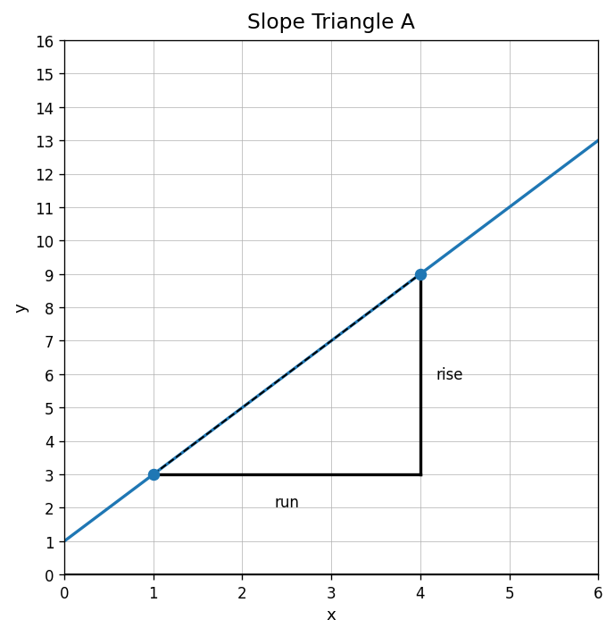
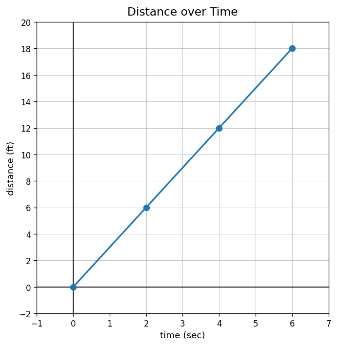
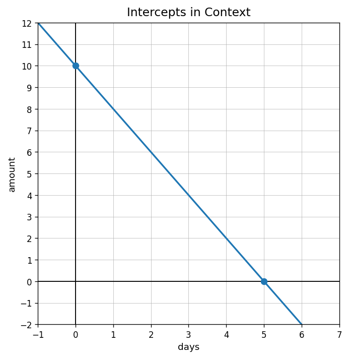

Practice Set 2.1.1
Use the slope triangle to find the rise, run, and slope of the line.

Find the rate of change in the table.
| time (sec) | 0 | 2 | 4 | 6 |
|---|---|---|---|---|
| distance (ft) | 1 | 7 | 13 | 19 |
A runner travels 18 feet in 3 seconds at a constant speed. What is the rate of change in feet per second, and what does it mean?
Does the relationship shown in the graph have a constant rate of change? Explain how you can tell.

Identify each representation as a table, graph, equation, context, or verbal description.
- $y=3x+4$
- A graph of a line through $(0,4)$ and $(2,10)$
- The total cost is 4 dollars plus 3 dollars per item.
Use the table. What output matches the input $x=3$?
| $x$ | 0 | 1 | 2 | 3 |
|---|---|---|---|---|
| $y$ | 5 | 8 | 11 | 14 |
In the graph, what quantity is shown on the horizontal axis? What quantity is shown on the vertical axis?

A relationship starts at 6 and increases by 2 each step. Which equation could match it?
- $y=6x+2$
- $y=2x+6$
- $y=x+8$
Write a possible real-world story for the table.
| hours | 0 | 1 | 2 | 3 |
|---|---|---|---|---|
| total dollars | 12 | 20 | 28 | 36 |
Determine whether the equation $y=3x+4$ matches the table. Explain briefly.
| $x$ | 0 | 1 | 2 | 3 |
|---|---|---|---|---|
| $y$ | 4 | 7 | 10 | 13 |
A student says the graph matches the rule $y=3x+4$. Use at least two pieces of evidence to support or reject the claim.

Create a table, equation, and context that all represent the same relationship. Then explain how someone could verify that the three representations match.
State the coordinates of points A and D.

Name the quadrant containing each point: $(-4,3)$, $(3,-1)$, and $(-2,-5)$.
On a distance-time graph, the point $(4, 22)$ appears. Interpret the point in context.
Use the graph. Identify the $x$-intercept and $y$-intercept, then describe what each could mean in context.
